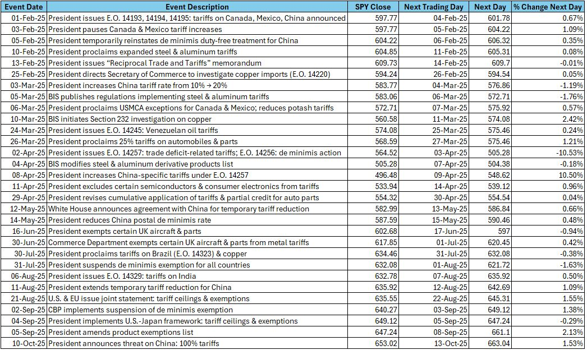

Mission: To help you think strategically about money, risk, and decision-making.
Philosophy: Sheriff Analytics is a boutique financial research and strategy brand that studies markets through a quantitative and behavioral lens.
Analysis: Portfolio optimization, macro insights, and wealth psychology — blending data analysis with AI and personal investing experience.
Sheriff Analytics Portfolio Breakdown:
Trying to catch big wins on Trump trade policy?
The so-called TACO trade has become a hallmark for investors during Trump’s presidency and involves buying an investment after an immediate dip in policy announcement, in the hope of a market rebound.
Let us analyze the data using AI.
Pulled from Congress's site, below are key tariff policy event dates. This data set also includes October 10th’s 100% China tariff threat. For simplicity, assume the SPY 500 ETF is bought on each of these announcement days (or next available day) and that the investment is sold on the next available trade day.
The data is as follows (analyzed using AI)

SPY 2025 data is pulled from here
Event-driven trade days see larger day-to-day swings and higher volatility compared to the average 2025 SPY 500 ETF day since February 1st.
If one bought the SPY 500 ETF on each key tariff event day and sold on the next trading day, the cumulative return would have been approximately +10.23%. While this seems good, a simple buy-and-hold strategy of the SPY 500 ETF since Feb 1st, 2025, up until October 14th, 2025, would have yielded about +11.53%.
Moral of the story: time in the market beats timing - avoid the trade policy noise.
Written by: Ejaaz Sheriff
Analyzing recent market fluctuations and risk management strategies for investors.
Market volatility is the ultimate stress test for conviction. Whether it’s a 3% daily drawdown or a spike in the VIX above 30, short-term turbulence often reveals long-term discipline. This year’s swings in tech and energy have reminded me that risk management isn’t about avoiding losses — it’s about positioning for resilience.
I’ve focused on monitoring the relationship between bond yields and equity multiples; when the 2-year yield outpaces the 10-year, the signal is clear — liquidity is tightening, and risk assets usually recalibrate. Instead of reacting to noise, I prefer using volatility as an opportunity to accumulate quality names. The goal isn’t to predict every move, but to stay emotionally neutral when others aren’t.
Written by AI - Reviewed by Ejaaz Sheriff
Best practices for balancing equities, bonds, and alternative assets to maximize returns.
An optimized portfolio isn’t about owning everything — it’s about owning enough of the right things. For me, that means balancing growth exposure (like QQQ) with defensive assets that hold up when markets wobble. Too often, investors underestimate how correlation shifts under stress: assets that once seemed diversified can suddenly move together.
I regularly review my asset mix against forward-looking data like yield spreads, inflation expectations, and sector momentum. During low-volatility periods, I rebalance gradually; during high-volatility stretches, I let winners run and trim laggards. Optimization is dynamic — it’s not a one-time exercise but an ongoing dialogue between risk tolerance and market reality.
Written by AI - Reviewed by Ejaaz Sheriff
Exploring how investor psychology affects decision-making and portfolio performance.
Markets move on math, but investors move on emotion. Behavioral finance reminds me that discipline often matters more than data. Fear of missing out and loss aversion are still the two biggest drivers of poor decisions — and no algorithm is immune to human psychology behind the trade.
Over the past year, I’ve tracked how sentiment shifts impact volume in retail-heavy ETFs. The patterns are predictable: optimism peaks right before corrections, and pessimism right before rallies. Recognizing these cycles helps me stay detached and systematic. In the end, consistency beats excitement — and understanding your own behavior is the best hedge against bad decisions.
Written by AI - Reviewed by Ejaaz Sheriff
For educational purposes only. This chatbot does not provide financial advice.
Socials